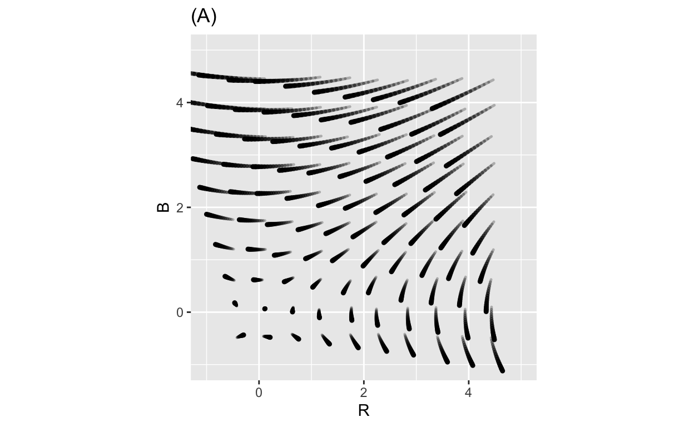
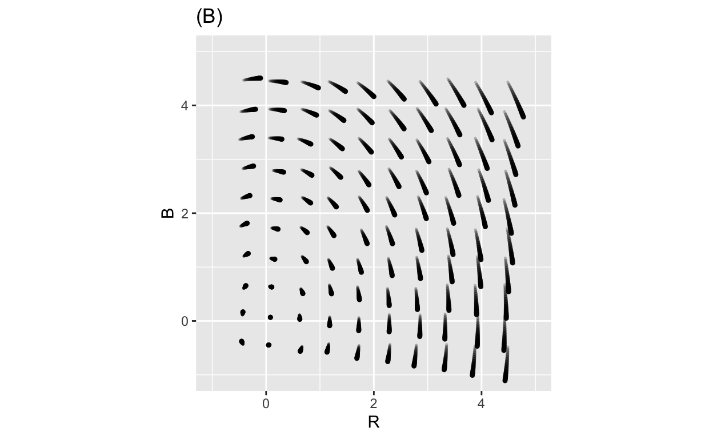
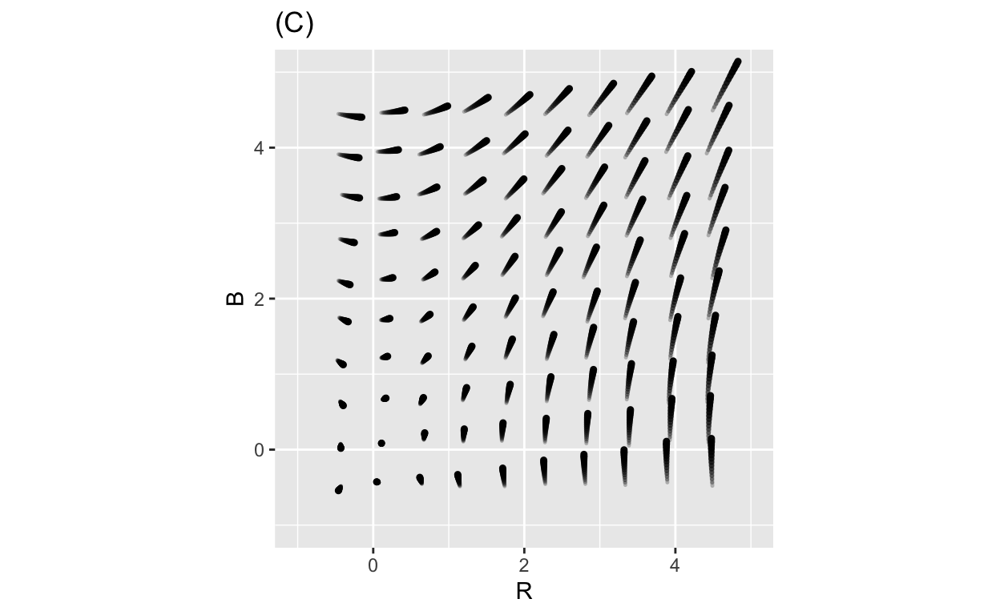
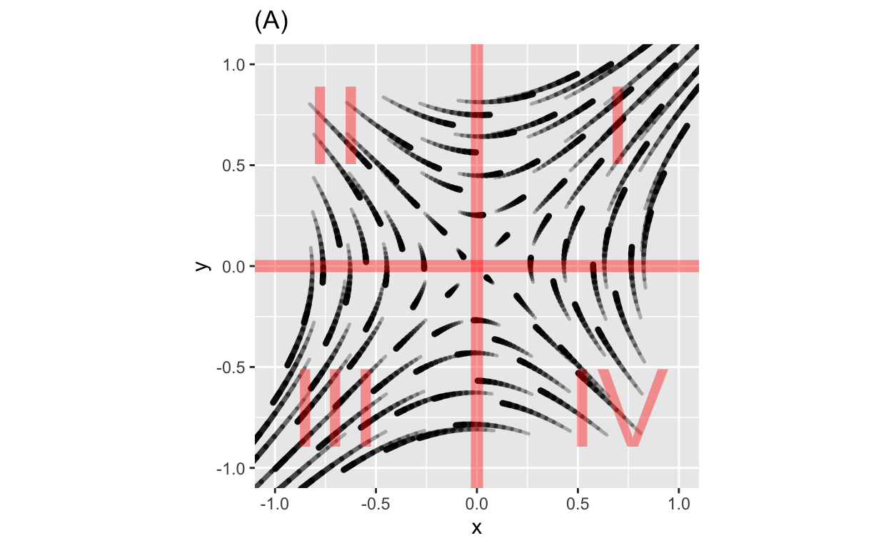
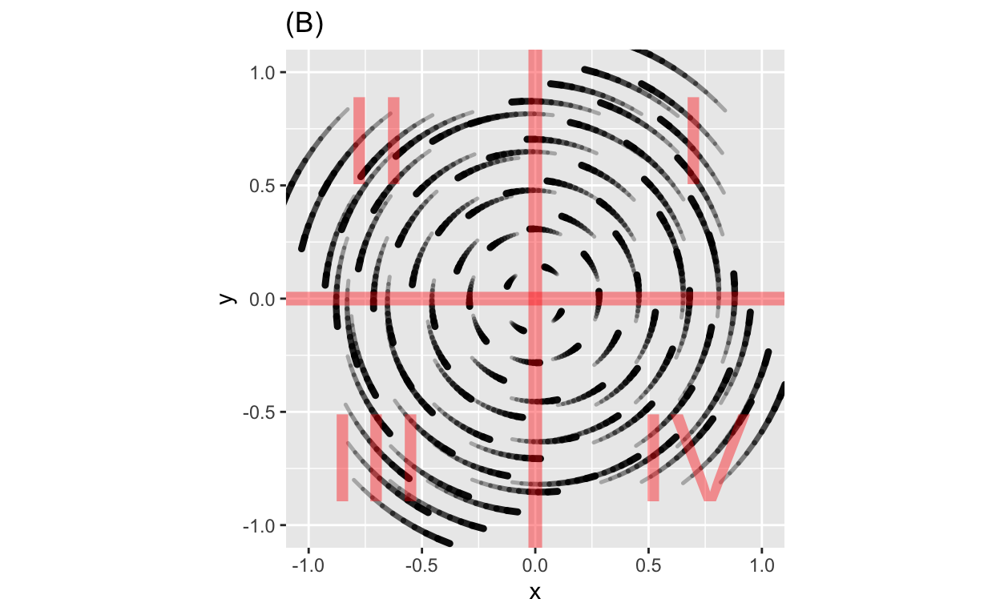
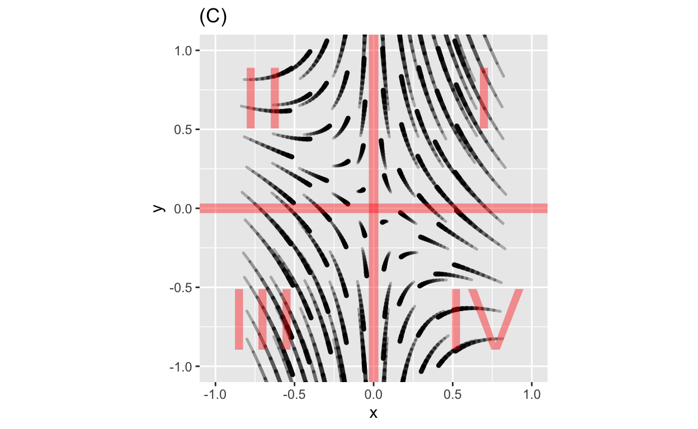
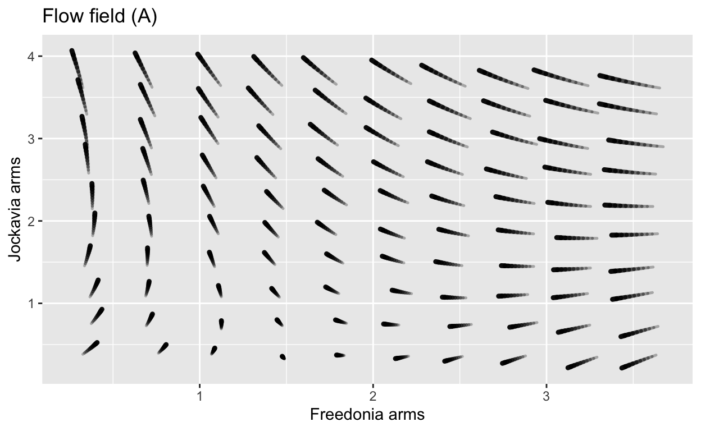
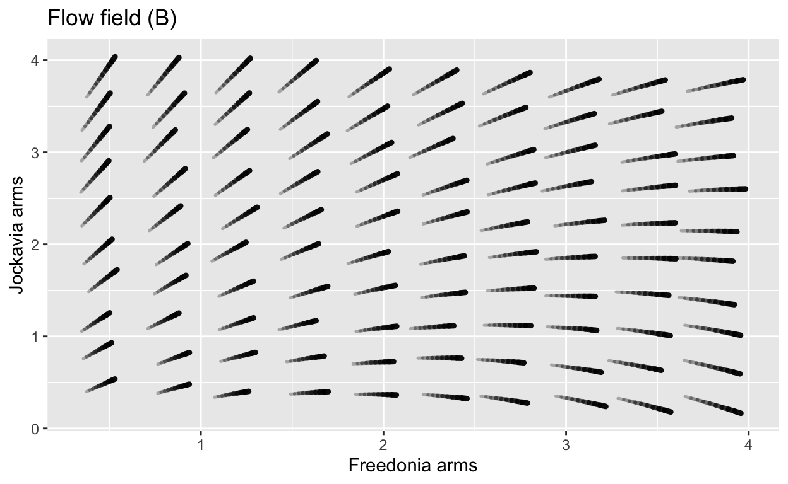
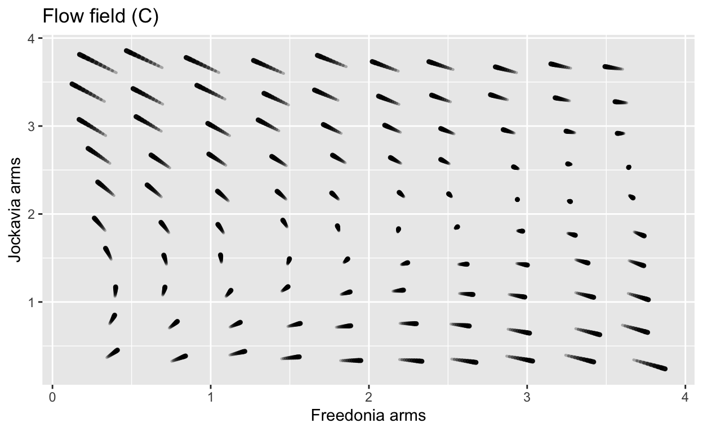

Objectives
- Use low-dimensional polynomials to construct global, nonlinear differential-equation models.
- Become familiar with “classic” nonlinear differential-equation models.
- Be able to interpret individual terms in the dynamical function as describing specific relationships among real-world objects.
Attrition
Differential equations provide a medium for expressing engineering and physics ideas, as well as ideas in many other fields. Frederick William Lanchester (1868-1946) was a British engineer, considered one of the greats of British automotive engineering. But that hardly does justice to him.
While voyaging across the Atlantic to America, he became captivated by the gliding flight of herring gulls. This led to his development of his circulation theory of flight, a foundation of aerofoil theory. In 1906 he published Aerial Flight containing the first full theory of lift and drag. In Aerodonetics (1908) he developed his phugoid theory of aircraft stability, describing oscillations and stalls.
In 1914, Lanchester wrote a book-length series of journal articles that were published in 1916 as Aircraft in Warfare: the Dawn of the Fourth Arm. Imagine trying to theorize about a form of conflict that had never been seen! > The difficulty … is that in order to get the future into true perspective, it is necessary to be able to look forward along two parallel lines of development—i.e. to visualize the improvement of aircraft possible in the near future as a matter of engineering development, and simultaneously to form a live conception of what this improvement and evolution will open up in the potentialities of the machine as an instrument of war. (p.3)
As a small part of his theorizing, Lanchester introduced a simple mathematical theory of combat now known as Lanchester’s Laws. He imagined two opposing forces, Red and Blue, of size \(R\) and \(B\) and fighting effectiveness \(r\) and \(b\) respectively. (Both \(r\) and \(b\) are positive numbers. Indeed, neither \(R\) nor \(B\) can ever become negative.) The rules of attrition are that losses to Blue are proportional to the size of Red, and vice versa.
\[\dot{B} = - r R\\ \dot{R} = - b B\]
This dynamical system has a fixed point at (0, 0): no forces, no fighting.
The eigenvalues of the system are \(\lambda_{1,2} = \pm \sqrt{rb}\)

Lanchester’s Law has a surprising consequence for measuring the overall strength of a force in a way that combines size (\(R\) and \(B\)) and effectiveness (\(r\) and \(b\)) and the implications that has for tactics.
The motivating idea is to find some quantity based on \(R\), \(B\), \(r\), and \(b\) that does not change in time, even as \(R\) and \(B\) change. This is called a conserved quantity. Here’s one candidate
\[rR^2 - b B^2 \overset{?}{=} \mbox{constant}\] How can you see that this is conserved? Differentiate it with respect to time. If that derivative is zero, then the quantity doesn’t change in time. We’ll do this in two parts:
Here are two more candidates for conserved quantities:
- \(rR - bB\)
- \(rB - bR\)
Take the derivative with respect to time of each of them to determine if they are conserved.
The conservation of \(rR^2 - b B^2\) suggests that we measure a force’s strength as effectiveness \(\times\) size\(^2\). As battle proceeds, the strength of each force goes down at the same rate until the battle is over.
One implication of this is that a single force of size 2 is twice as strong as two separate forces each of size 1. Don’t split your own forces. (Stay in formation!) Seek to split your opponent’s forces.
Predation
Lanchester’s Law are so simple that it’s tempting to think that the thought behind them is simple, too. Let’s look more carefully by comparing Lanchester’s Law of combat to the conflict between predator and prey in nature. We’ll imagine a stylized system involving rabbits living unconstrained by food supply and foxes who prey only on rabbits.
Recall from earlier in CalcZ our consideration of low-order polynomials as a kind of modeling clay. A full second-order polynomial function in two variables \(R\) and \(B\) has this form:\[g(R, B) = a_0 + a_R R + a_B B + a_{RB} RB + a_{RR} R^2 + a_{BB} B^2\]
\[\dot{R} = a_0 + a_R R + a_B B + a_{RB} RB + a_{RR} R^2 + a_{BB} B^2\\ \dot{B} = b_0 + b_R R + b_B B + b_{RB} RB + b_{RR} R^2 + b_{BB} B^2\]
This is a linear combination of six simple functions:
- constant
- linear in R, that is proportional to \(R\)
- **linear* in B, proportional to \(B\)
- bilinear, that proportional to \(R\) and, at the same time, proportional to \(B\).
- quadratic in \(R\)
- quadratic in \(B\)
Think of these six basic functions as the items on a pantry shelf. To compose a dish, you mix ingredients together in different proportions, leaving out any ingredients not needed. The coefficients \(a_0\), \(a_R\) and so on are analogous to a recipe, saying how much of each ingredient is called for. Multiplying a coefficient times a function is like measuring out an ingredient. “\(a_{RR}\) tablespoons of quadratic \(R\), please.” Other than measuring, the only cooking skill called for is \(+\): mixing together. But unlike cooking, you can have negative amounts of one ingredient or another.
Our task here is to put together a polynomial recipe relevant to the dynamics of armed combat or of predator vs. prey.
In the combat situation, there is a symmetry between \(R\) and \(B\). Whatever dynamics apply to \(R\) will also apply to \(B\) but with the roles of the variables reversed. In the predator-prey situation, there is no such symmetry: rabbits don’t fight back.
First, combat.
- constant Is there a loss or gain in the size of \(R\) that is independent of \(R\) itself. One can imagine factors such as recruitment or training that go on at a constant rate, providing a steady influx. But since the model is about the dynamics of a battle, there’s not time for such factors to play a role. So, \(a_0 = 0\).
- linear in R Recall from simple differential equations that a model like \(\dot{R} = a_R R\) corresponds to exponential growth or decay. In population models, births and natural deaths are modeled this way. But these two processes are irrelevant to the course of a battle.
- linear in B The subsystem \(\dot{R} = a_B B\) is directly relevant to battle: Red’s rate of loss (\(\dot{R}\)) will be larger when your opponent’s force \(B\) is larger.
- bilinear. The subsystem \(\dot{R} = a_{RB} R B\) also shows the pattern that Red’s rate of loss is proportional to \(B\), which is relevant to battle. But the bilinear term also says that the effectiveness of force Blue is proportional to the size of Red. A small Red force takes casualties at a low rate, no matter how large is Blue. There are circumstances where this might apply, as in “mopping up” operations where the winning force hunts down the few hidden, surviving members of the losing force. Lanchester, when developing his model, explicitly states it is meant to apply to “aimed, directed fire.” You know where your opponent is and can concentrate fire on them.
- and vi. **quadratic* Quadratic terms are relevant when there is an finite optimal level of the variables, that produces stronger results than either smaller or larger levels. When you can point to a scenario of ongoing engagement where a general honestly wants his or her own force to be smaller, or wishes that the opposing force was much larger, then you have a situation where a quadratic in \(R\) or in \(B\) would be relevant.
There are three additional modeling tactics that can help in selecting the ingredients for a model.
- Examine inputs at zero. Look at the behavior of the system when one or the other of \(R\) or \(B\) are zero. Example: If \(B\) is zero, then \(R\) will incur no losses, and vice versa. This is enough to tell us that \(a_0\) and \(b_0\) should be zero.
- Enforce parsimony. Don’t include a modeling term unless it’s clearly directly relevant. Example: Recall from Lanchester’s Law that the strength of Red is proportional to \(R^2\). Doesn’t this suggest that Blue’s losses will increase with \(R^2\)? That’s not an unreasonable thought. But Lanchester’s Law (without any quadratic term) already leads to the conclusion that the loss of Blue strength will be identical to the loss of Red’s strength.
- Choose a relevant time scale. Lanchester’s Law is about battles, which have time scales of hours to weeks. During this time there is no opportunity for other dynamics to come into play, for instance training and equipping new forces.
Let’s transfer this sort of reasoning to the fight for survival of rabbits and foxes. The name \(R\) is we’ll suited to rabbits. We’ll continue to use \(B\) as a variable name to help the arguments line up term by term. So think of \(B\) as “bad guys,” or “bullies,” or “beasts.”
In words, the dynamics are these.
In the absence of foxes, the rabbit population grows. There’s ample sustenance for them, especially because foxes eat rabbits, forcing the rabbit population down.
In the absence of rabbits, the fox population decreases because, in our stylized model, rabbits are all that foxes have for nutrition and without them foxes will starve. Sustenance and even growth of the fox population depends on how many rabbits can be hunted down.
Notice that this description of dynamics already include the tactics of zero inputs and parsimony. “In the absence of foxes …” means \(B=0\).
Why not include a quadratic term for rabbit growth. After all, the logistic model of growth to a carrying capacity is one of the CalcZ basic differential equations. For rabbits, it would look like \(\dot{R} = rR - rR^2/\kappa\). Parsimony suggests that we ought to leave out this elaboration. If the resulting model doesn’t work, we can try adding it in. (Or, we can try the model both with and without a rabbit carrying capacity and see if the resulting dynamics are strongly shaped by its presence.)
A quick survey of polynomial ingredients from our modeling pantry for the rabbit/fox model:
- Constant. Neither rabbits nor foxes come from nowhere. If both \(R\) and \(B\) are zero, only an outside influence can make them otherwise.
- Linear in \(R\). This is what rabbits famously do: \(\dot{R} = a_0 R\). Should there be a \(\dot{R} = b_R B\) component to the model. If rabbits are few and far between, foxes will have a hard time finding them, so \(\dot{R}\) will be small. \(b_R B\) is independent of \(R\), so it doesn’t provide this behavior.
- Linear in \(B\). Foxes will starve when the rabbit population is low, so \(\dot{B} = - b_B B\). We’re using a minus sign to remind us that \(b_B B\) describes fox death, not fox birth. Should there be a \(\dot{B} = b_R R\) linear term? Just having lots of rabbits will not bring the foxes back from extinction.
- Bilinear. With (i), (ii), and (iii), there isn’t yet any dependence of rabbit growth/decay on the number of foxes, and vice versa. Yet clearly there needs to be one. If it’s not in the linear term, it must be here. So the fox-kills-rabbit component will be \(\dot{R} = - a_{RB} RB\), lowering the rabbit population. But foxes benefit from eating rabbits: \(\dot{B} = b_{RB} RB\).
- Quadratic. We’ve already discussed the issue of the environment’s carrying capacity for rabbits. In the name of parsimony, we’ll leave it out initially.
\[\dot{R} = r R - \beta RB\\\dot{B} = - \mu B + \gamma RB\]
where all the parameters are larger than zero.
Now to examine the behavior of the rabbit-fox system near the non-zero fixed point \((R^\star, B^\star)\). For this, it will be handy to give names to the dynamical functions; we’ll call them \(g(R, B)\) and \(h(R, B)\) respectively.
\[\dot{R} = g(R,B) \equiv r R - \beta RB\\\dot{B} = h(R, B) \equiv - \mu B + \gamma RB\]
To study the dynamics near the fixed point, we are going to linearize \(g()\) and \(h()\) around the fixed point. That is, define \(x \equiv R - R^\star\) and \(y \equiv B - B^\star\).
The linearized dynamics will be …
\[\dot{x} = \left.\partial_R g(R, B)\right|_\mbox{fp} x + \left.\partial_B g(R, B)\right|_\mbox{fp} y\\ \dot{y} = \left.\partial_R h(R, B)\right|_\mbox{fp} x + \left.\partial_B h(R, B)\right|_\mbox{fp} y\\\] where \(\cdot\left.\strut\right|_\mbox{fp}\) means to evaluate the derivative at the fixed point (fp) you found in the previous exercise.
Note: Put aside for a moment any anxiety you might have about doing algebra with paper and pencil. If you have an inkling for what it means to say “evaluate the derivative at the fixed point,” it means you already have a good grasp on the essentials of calculus. If not, make sure seek an explanation of the meaning of the phrase from an instructor or other friend or colleague. Understanding the meaning of the phrase is more important to your future work than being able to do the algebra flawlessly.
Plugging in the location of the fixed point \(R^\star\) and \(B^\star\) into the correct answer from each of the four previous questions will give you the four components of the matrix \(\mathbf A\) in the general, linear, two-dimensional differential equation \(\dot{\mathbf x} = {\mathbf A} {\mathbf X}\). Which of the following is the correct matrix for the linearized predator-prey model?
\[\left[\begin{array}{cc}0 & -\beta/\gamma \\ -\gamma r/\beta & 0\end{array}\right]_\mbox{i}\ \ \ \ \ \ \left[\begin{array}{cc}0 & \beta\mu/\gamma \\ -\gamma r/\beta & 0\end{array}\right]_\mbox{ii}\ \ \ \ \ \ \left[\begin{array}{cc}0 & -\beta\mu/\gamma \\ \gamma r/\beta & 0\end{array}\right]_\mbox{iii}\ \ \ \ \ \ \left[\begin{array}{cc}r & -\beta\mu/\gamma \\ \gamma r/\beta & 0\end{array}\right]_\mbox{iv}\]
We haven’t yet said anything about the relative sizes of the parameter \(r\), \(\beta\), \(\gamma\), and \(\mu\). But we do know they are all positive. That gives you enough information to sketch out roughly the flow field of the linearized equations. Here are some possibilities.

Each flow field has a fixed point at (0,0). We’ve marked off the quadrants to help you figure out which field corresponds to the predator-prey model.
At the boundary between Quadrants I and II, rabbits are at their equilibrium level but foxes are above theirs. Which way will the flow need to go? That will the rabbit population grow? Will the fox population grow?
Similarly, at the boundary between Quadrants IV and I, rabbits are above equilibrium but foxes are at equilibrium. Will the rabbit population grow? Will the fox population?
Numerics
We’ve looked at this seemingly simple model, almost a cartoon of the interaction of predators and prey, which we’re calling “rabbits” (\(R\)) and “foxes” (\(B\), perhaps for “\(B\)easts”).
\[\dot{R} = r R - \beta RB\\\dot{B} = - \mu B + \gamma RB\]
Your task in this section is to find solutions to these differential equations. Sometimes it possible to do this algebraically, as with the linear systems \(\dot{x} = a x\) or \(\dot{\mathbf X} = {\mathbf A} {\mathbf X}\). Here that’s not so easy.
But even if we can’t use algebra to find the solutions, it helps to undertake as much analysis of the system as we can in algebraic form. For instance, by setting \(\dot{R} = \dot{B} = 0\), we can find that there is a fixed point at \((R^\star=\mu/\gamma,\ B^\star = r/\beta)\).
In the previous section, we linearized the dynamics around this fixed point and found algebraically that the eigenvalues are \(\lambda_{1,2} = i\omega\), that is, with no real part. So we know to expect an oscillation in the population of rabbits and foxes. Since the real part of the eigenvalues is zero, the stability is “neutral,” heading neither inward toward the fixed point or outward from it.
To explore solutions to the predator-prey dynamics, we can use numerical methods such as Euler steps. Doing this requires starting with numerical values for
- the initial conditions, that is \(R(0)\) and \(B(0)\)
- the parameters \(r\), \(\beta\), \(\gamma\), \(\mu\)
Suppose we are intending to model a situation where the equilibrium population for rabbits is \(R^\star = 1000\) and for foxes is \(B^\star = 100\). Using our algebraic form for the location of the fixed point, this tells allows us to related some parameters to others.
These two relationships tells us that if we know \(\beta\) and \(\gamma\), simple arithmetic tells us \(r\) and \(\mu\), and vice versa.
Part of the art of modeling is selecting parameters in a way that we can make at least rough estimates of their numerical values from information that’s available or can be readily collected. The two simplest parameters in this regard are \(r\) and \(\mu\), which govern the reproductive rate of rabbits (in the absence of foxes) and the death rate of foxes (in the absence of rabbits).
This being an exercise, we do a quick search on the internet. This reveals that rabbits have 3-4 litters per year and that the life-span of a red fox (presumably with prey available) is 2-5 years. Intuition suggests that a dramatic shortage of food would reduce lifespan to a small fraction of this. For the purpose of simplicity, we’ll continue under the assumption that the doubling time of a rabbit population (absent predation) is 3 months, and the half-life of a starving fox is also 3 months.
A similar method tells us the fox starvation half-life \(\mu\). Knowing \(r\) and \(\mu\) gives us numerical values for \(\gamma\) and \(\beta\). - \(\gamma = \mu / 1000 = 0.0003\) - \(\beta = r / 10 = 0.03\)
With tentative values for these parameters, we can find solutions to the differential equations. The following code box finds solutions and graphs them. The graphs are made with traj_plot(), which knows about the output of integrateODE(). In traj_plot(), the tilde expression determines what’s plotted against what. The initial conditions are set by the last two arguments. (Note: the \(R\) and \(B\) axes are logarithmic. So the distance between consecutive marks is a factor of \(\sqrt{10}\).)
Rdot <- dR ~ 0.3*R - 0.03 *R*B # rabbit dynamics
Bdot <- dB ~ -0.3*B + 0.0003*R*B # fox dynamics
# Integrate these numerically over a period of, say, 36 months.
Soln <- integrateODE(Rdot, Bdot, tdur=36, R=1000, B=10)
traj_plot(R(t) ~ B(t), Soln, nt=10) %>%
gf_refine(scale_y_log10(), scale_x_log10())
traj_plot(R(t) ~ t, Soln, color="red") %>%
traj_plot(B(t) ~ t, Soln, color="blue") %>%
gf_refine(scale_y_log10())In Teletubby land, the rabbits breed all year long (and there are no foxes, at least on-camera). But much of the real world is seasonal. Just to play around with a system that reflects seasonality, the following sandbox changes the system so that the rabbits reproduce in May through August (months 5 through 8). The details of how we do this aren’t important for us here, but involve the use of “remainder” division, t %% 12. Orange vertical lines mark successive Junes.
april_to_august <- function(t) {
month = t %% 12
month > 3 & month < 9
}
Rdot <- dR ~ (t%%12 > 4 & t%%12 < 9)*0.3*R - 0.03 *R*B # rabbit dynamics
Bdot <- dB ~ -0.3*B + 0.0003*R*B # fox dynamics
# Longer period of integration: 200 months
Soln <- integrateODE(Rdot, Bdot, tdur=200, R=1000, B=5)
traj_plot(R(t) ~ B(t), Soln, nt=0)
traj_plot(R(t) ~ t, Soln, color="red") %>%
gf_vline(xintercept=6 + (0:15) * 12, color="orange")
traj_plot(B(t) ~ t, Soln, color="blue") %>%
gf_vline(xintercept=6 + (0:15) * 12, color="orange")Dynamics such as these can be extremely hard to understand. You’ll see this better of you change the 0.3 in the 0.3*R rabbit reproduction term to 0.35 or higher.
Lessons to take home from this example:
- Even simple nonlinear dynamics can generate non-decaying oscillations.
- Add just a little more complexity, and things can get really complicated.
- It’s almost impossible to make ecological models that could give good predictions. (One real-world manifestation of this is the collapse of global fisheries as the various parties argue about what “sustainable” might mean.)
Linear dynamics around a fixed point is a big part of what we can understand mathematically about real-world systems.
For practice
Lewis Fry Richardson (1881-1953) was an English scientist who worked in many areas, including weather prediction. This problem concerns a model Richardson built to account for arms races between countries.
In the model, \(x\) and \(y\) respectively refer to the size of the military of the two countries. The equations model how the size of the militaries change in time:\[\begin{eqnarray*} \dot{x} & = & a y - m x + r\\ \dot{y} & = & b x - n y + s\\ \end{eqnarray*}\]
The terms \(r\) and \(s\) represent the basic grievances between the two countries.
The parameters \(a\) and \(b\) represent “fear,” that is, the extent to which one country feels the need to build up arms in response to the other country’s arms.
The parameters \(m\) and \(n\) are about the internal dynamics of the country: its ability/desire to sustain a large military.

Depending on the values of the parameters \(a\), \(b\), \(m\), \(n\), \(r\), and \(s\), the Richardson dynamics can produce different outcomes. Two of the following three plots show Richardson Arms Race dynamics for two mutually fearful countries with mutual grievances, Freedonia and Jockavia. The third plot does not; the signs of one of the coefficients has been reversed and so the dynamics don’t make sense for modeling an arms race.
- In each of the three plots, start from initial point \(x=2,y=1\), that is, a situation where Freedonia is more armed than Jackavia, and trace out the trajectory over time.
- For each of the three plots, find any equilibrium point and say whether it is stable or unstable. If there is no equilibrium, move on.
- Identify which of the three plots is NOT the Richardson dynamics.
- In the non-Richardson flow, which coefficient has been reversed: it’s one of \(a\), \(b\), \(m\), \(n\), \(r\), or \(s\).
Hand in your work
Location: CalcZ/_DailyDigitals/DailyDocuments/inst/DD-142Z-24/142Z-DD-24.Rmd DD-142Z-24